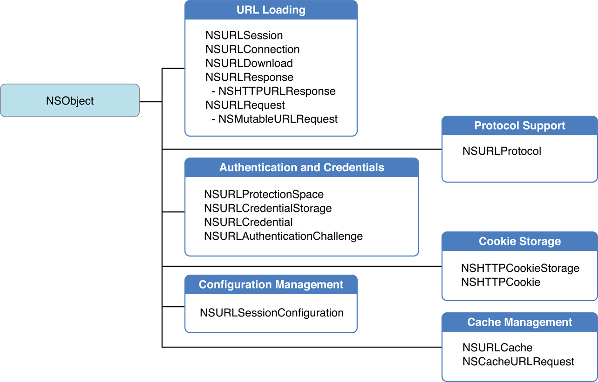

之前一直是使用NSURLConnection用得比较多，NSURLSesion是跟随iOS7一起出来的，虽说现在网络请求基本上是使用AFNetworking，但了解下其基本的使用还是有必要的。于是决定翻译下这篇文档，加深自己对这一块的了解。
关于URL加载系统（URL Loading System）
这篇指南描述了基础的框架类，这些类可用于跟URLs交互和使用标准互联网协议跟服务器通讯。谈及到的类被称为URL加载系统。
URL加载系统是
一些类和协议的集合，你可以在app中使用这些类和协议
访问URL引用的内容。NSURL是这个技术的核心，你可以在app使用它来维护它们引用的资源。
作为支撑，Foundation框架提供了一个丰富的类集合，你可以使用这些类加载URL的内容，上传数据到服务器，管理cookie的存储，控制响应缓存，处理证书和在app中使用指定的方法做身份认证，并且可以自定义协议扩展。
URL加载系统支持使用以下协议访问资源：
- 文件传输协议（ftp://)
- 超文本传输协议（http://)
- 加密超文本传输协议（https://)
- 本地文件URLs（file:///)
- 数据URLs（data://)
显然，使用用户系统设置提供的代理服务器和SOCKS网关也是支持的。
重要： 作为URL加载系统的附加功能，OSX和iOS提供APIs以打开其它应用中URLs，例如Safri。这些APIs的描述并不在本文档中。
想要了解更多OSX中的启动服务，请阅读Launch Services Programming Guide
想要了解更多关于OSX中
NSWorkSpace类的openURL:方法，请阅读NSWorkSpace Class Refrence想要了解更多关于iOS中
UIApplication类的openURL:方法，请阅读UIApplication Class Refrence
概览
URL加载系统包含加载URLs的类和一些重要的修改URL加载类行为的帮助类。主要帮助类分为五类：协议支持，认证和证书，cookie存储，配置管理，缓存管理。

URL加载
URL加载系统中最常用的类允许你的应用从一个URL源获取内容。你可以用多种方式获取类容，取决于应用需求。API版本的选择取决于OS X或iOS上你的应用支持的版本，或者是你想保存数据到文件或只是保存数据到内存块中：
- 在iOS7和OS X v10.9之后，
NSURLSession是执行URL请求编码时首选的API。 - 由于一些软件必须支持先前版本的 OS X， 你可以使用
NSURLDowload去下载URL的内容保存到磁盘的文件上。 - 由于软件必须支持先前版本的iOS或OS X，你可以使用
NSURLConnection去下载URL内容到内存中。稍后如果需要也可以保存内存中的数据到磁盘中。
具体使用哪个方法去取决于你想获取数据是保存到内存还是下载保存到磁盘中。
获取数据（内存中）
有两种获取URL数据的基本方法：
- 简单的请求，使用
NSURLSessionAPI去直接获取一个NSURL对象的内容，NSData或者磁盘上的文件接收数据。 - 复杂的请求－上传数据请求，举个例子－提供一个
NSURLRequest对象（或者它的可变子类，NSMutableURLRequest）给NSURLSession或者NSURLConnection。
不管使用哪种方法，获取响应数据有如下两种方法：
- 提供一个完成处理回调block。当完成从服务器接收数据时URL加载类将调用这个回调函数。
- 提供一个代理。当从源接收数据时会定期的调用URL加载类提供代理方法。如果需要，你需要将接收到的数据追加到一起以组成完整的数据。
对于数据本身而言，URL加载类给代理方法或者回调block提供一个响应对象，这个响应对象封装了请求的元响应头数据，例如MIME类型和响应内容的长度。
下载内容到文件
有两种基础的方法下载URL的内容到文件中：
- 简单的请求，使用
NSURLSessionAPI去直接获取一个NSURL对象的内容，NSData或者磁盘上的文件接收数据。 - 复杂的请求－上传数据请求，举个例子－提供一个
NSURLRequest对象（或者它的可变子类，NSMutableURLRequest）给NSURLSession或者NSURLDownload。
NSURLSession类相对于NSURLDownload有两个明显的优点：在iOS中可以使用，当程序暂停，终止或者崩溃时可以在后台继续下载。
NSURLDownload或者NSURLSession初始化的下载实例不会缓存数据。如果你需要缓存结果，需要使用NSURLConnection或者NSURLSession并且将数据写到磁盘中。
帮助方法
URL加载系统使用两个辅助类提供附加元数据功能－一个对于请求（NSURLRequest）另一个是服务器响应(NSURLResponse）。
当客户端应用使用
NSMutableURLRequest的实例初始化一个连接或者下载，对这个请求将执行深拷贝。下载初始化后改变初始化请求没有任何影响。
一些协议支持协议内指定的属性。举个例子，HTTP协议给NSURLRequst添加一些方法以返回HTTP请求体，请求头，和传输方法。给NSMutableURLRequest添加一些设置这些值的方法。
文档的后面将做一些详细的介绍。
响应元数据
从服务返回给请求的响应可以看做两部分：元数据描述内容和实际的内容。元数据对于大部分协议封装成NSURLResponse类，包含MIME类型，预估内容长度，文本编码（可编程）和提供相应的URL。NSURLRespnse协议自定的子类可提供额外的元数据。举个例子，NSHTTPURLResponse保存了从web服务器返回的的响应头和响应码。
重要：
NSURLResponse对象中仅储存响应元数据。不同的URL加载类通过结束回调函数或代理方法提供响应数据。
NSCachedURLResponse实例封装了NSURLResponse对象，URL内容数据，和其它提供给应用的附加信息。在缓存管理中将详细讲解。
详细的URL响应对象将在文档中逐步阐述。
重定向和其它请求变化
一些协议，例如HTTP，给服务器提供一个方法告知客户端请求的URL的数据被移动到另一个URL。当发生这种情况时URL加载类会通知代理方法。如果有提供合适代理方法，可以处理是返回错误，还是跟随重定向返回重定向后的响应。
认证和证书
一些服务器严格限制访问特定内容，需要用户提供一类证书－客户端证书，用户名和密码等等以获取访问权限。在web服务器中，限制的内容将组织到一个领域，需要一套凭证以访问。证书也用于决定是否信任其它的方面－评估客户端是否信任服务器。
URL加载系统提供一些类，这些类提供安全证书和领域。你可以为一个请求指定这些证书或者在程序启动时，或者保存在钥匙串中。
注意:在用户钥匙串中储存的证书在所有的应用中共享。
NSURLCredential类封装了包含认证信息（举个例子：用户名或密码）和持久化行为。NSURLProtectionSpace类表现为一个指定证书的保护区域。一个保护的空间可以被限制为一个URL，包含一个web服务器的这个领域，或者是一个代理服务器。
一个共享的NSURLCredentialStorage类管理证书存储和提供NSURLCredential对象到对应的NSURLProtectionSpace对象的映射以提供认证。
NSURLAuthenticationChallenge类封装了NSURLProtocol所需认证请求的信息：目标证书，所涉及到的保护区域，错误或者响应信息以便协议用于决定是否需要认证，认证所尝试的次数。NSURLAuthenticationChallenge实例也指定初始化认证的对象。初始化对象，也就是sender必须遵循NSURLAuthenticationChallengeSender协议。
NSURLAuthenticationChallenge实例用于通知NSURLProtocol子类需要认证。也提供了NSURLConnection和NSURLDowload代理方法以便自定义认证处理。
缓存管理
URL加载系统提供一个复合的内存和磁盘缓存以减少应用对网络的依赖，并且能够快速切换之前缓存的响应。缓存存储对于每个应用是独立的。缓存是通过NSURLConnection指定缓存策略给NSURLRequest对象设置的。
NSURLCache类提供方法配置缓存大小和缓存磁盘的路径。也提供了管理NSCachedURLResponse对象集合方法，这些对象包含了缓存的响应。
NSCachedURLResponse对象封装了NSURLResponse对象和URL内容数据。NSCachedURLResponse也提供了一个用户信息的字典，这个字典可以缓存自定义的数据。
并不是所有的协议都实现支持响应缓存。目前为止只有http和https请求能够缓存。
NSURLConnection对象通过实现connection:willCacheResponse:代理方法可以控制响应是否缓存并且是否只是缓存到内存中。
Cookie 存储
由于HTTP协议是无状态的，客户端在URL请求时经常使用cookie提供数据持久化。URL加载系统提供接口创建和管理缓存，发送网络请求时把cookie作为请求的一部分，并且遇到服务器响应设置cookie时接收这些cookie。
OS X和iOS使用NSHTTPCookieStorage类，这个类提供管理NSHTTPCookie对象的集合的接口。在OS X中，cookie存储在所有的应用中可以访问；在iOS上，cookie不能在应用中共享。
协议支持
URL加载系统原生支持http，https，file，ftp和data协议。然而，URL加载系统也允许你的应用自定义类以支持其它应用层网络协议。你可以在URL请求和URL响应对象中添加协议中自定义的属性。